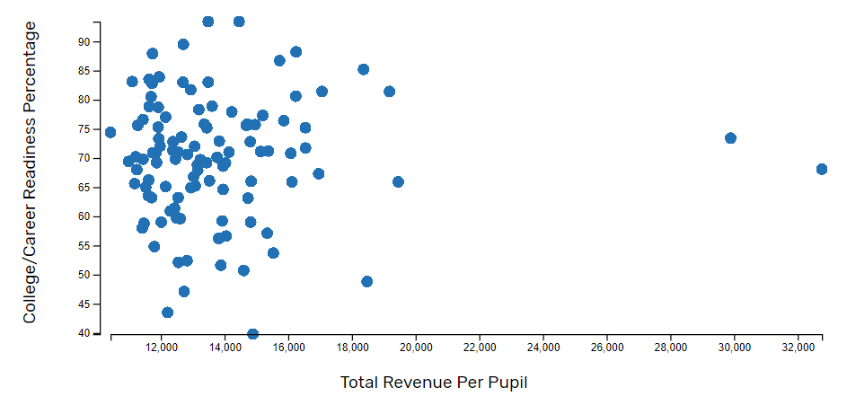

Study Shows No Correlation Between a School's Total Revenue per Pupil and College/Career Readiness in Kentucky County Schools

This chart demonstrates the total revenue per pupil received by each county school district in the state of Kentucky mapped to
the school's college/career readiness percentage. There is no correlation between these values.